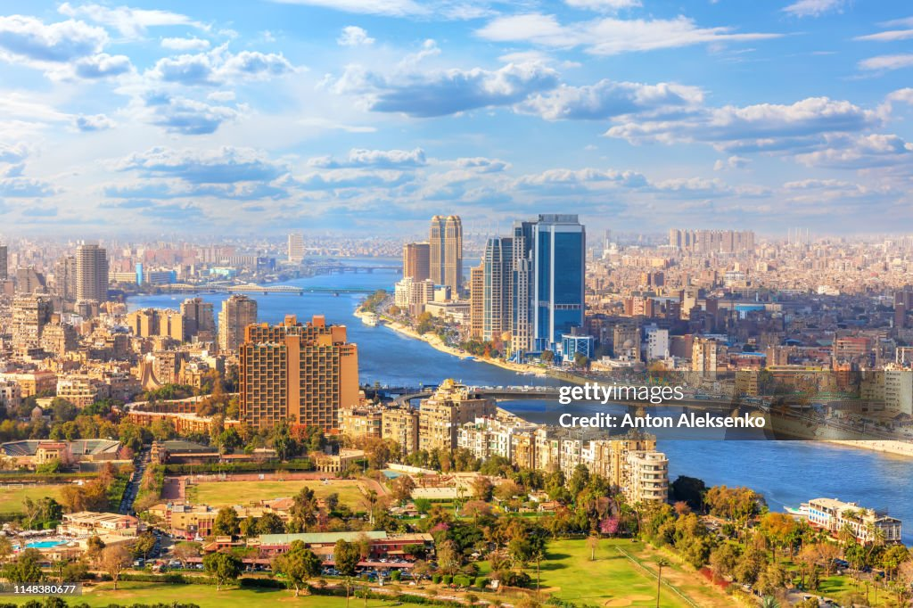
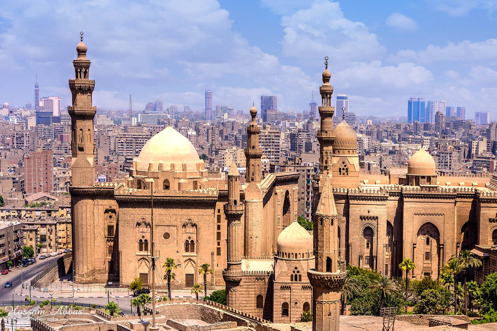

offre une vue panoramique sur la ville et est un endroit idéal pour se détendre, pique-niquer et profiter de la verdure. Vous pouvez y admirer les jardins bien entretenus, les fontaines et les allées ombragées. Avant sa transformation, le parc d’Al-Azhar était un terrain vague où les ordures de la capitale égyptienne étaient déversées. Grâce au financement de l’Aga Khan, le parc a ouvert ses portes en mars 2005. Il s’étend sur 72 acres et est situé juste au nord de la citadelle du Caire. Le parc d’Al-Azhar s’inspire des jardins islamiques historiques. Son axe principal est une allée formelle bordée de fontaines d’eau qui mène vers un petit lac. Des allées serpentent à travers le parc, offrant des vues pittoresques et pointant vers la citadelle du Caire. Le parc est abondamment planté de palmiers royaux, de manguiers, d’acacias et de bougainvillées.Vous y trouverez des parterres fleuris et des pelouses verdoyantes.
Le Musée égyptien du Caire (en arabe : المتحف المصري) est l’un des plus grands musées entièrement consacrés à l’Antiquité égyptienne. Il a reçu plus de cent millions de visiteurs au XXe siècle. Les collections égyptologiques égyptiennes ont été constituées depuis le XIXe siècle.


Le Caire est un carrefour de cultures, d’histoire et de vie moderne, et il y a toujours quelque chose d’excitant à découvrir dans cette ville dynamique 🕌🌆.
Découvrez les 10 meilleures choses à visiter au Caire
Les 18 meilleures choses à faire à Le Caire